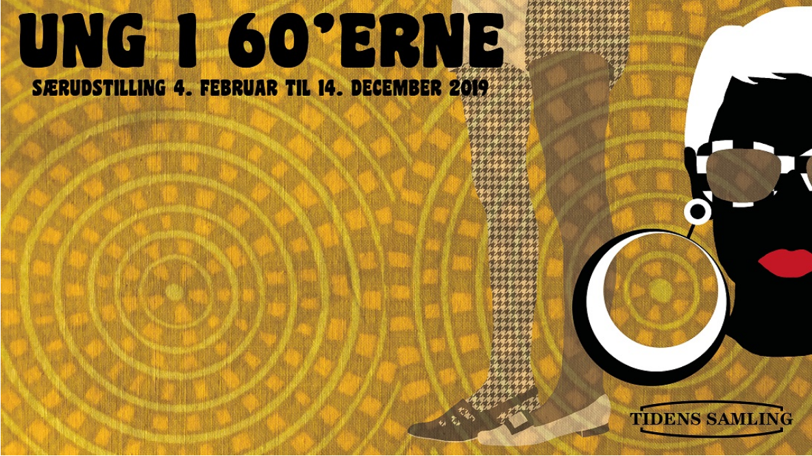

Nyheder
Udstillinger på Tidens Samling
DANSKERNES DAGLIGDAG I DET 20. ÅRHUNDREDE
Museet Tidens Samling har to udstillinger: en permanent og en særudstilling. Den permanente udstilling har ni tidstypiske stuer, der hver repræsenterer et årti fra 1900 til 1990’erne. Her må man sidde i møblerne, åbne skufferne og bladre i bøger og blade. Læs mere her. Tidens Samling har også et udklædningsafsnit, hvor børn og voksne kan klæde sig ud i originalt tøj fra det 20. århundrede. “Meget autentisk oplevelse af de forskellige årtier til og med 90’erne. Hver periode har deres eget “rum” hvor der tilmed er taget hensyn til tidens belysning og planter. Man må sidde ned i møblerne og røre ved tingene som f.eks telefoner…”
SÆRUDSTILLING 2019 UNG I 60'ERNE
Årligt har Tidens Samling en særudstilling, der sætter fokus på dansk design eller særlige perioder i det 20. århundrede. I år kan du opleve særudstillingen Ung i 60’erne, sætter fokus på et markant årti, der på mange måder forandrede Danmark – med ungdommen som en vigtig drivkraft. 1960’erne var en tid hvor de unge fik øjnene op for de muligheder der lå foran dem. Særudstillingen byder op til dans igennem et årti, hvor ungdommen trådte i karakter og dannede nye trends indenfor mode og musik – uafhængigt af forældregenerationen.
Besøg tidens samling
ÅBNINGSTIDER
Mandag-lørdag kl. 10-16 Helligdage mandag-lørdag kl. 10-16 (undtaget i december og januar) Tidens Samling har vinterlukket d. 15. december 2019-2. februar 2020.

OMVISNINGER
En omvisning er en god måde at få et indblik i det 20. århundredes historie Både private, institutioner, læreinstanser og virksomheder kan bestille en omvisning i museets permanente udstilling. Der er mulighed for enten at få en generel gennemgang fra 1900 til 1990’erne eller en mere skræddersyet løsning. Ønsker I en specifik vinkel på jeres omvisning, bedes I nævne dette ved bestilling af omvisningen.
Vi anbefaler maksimalt 25 personer pr. omvisning. Varighed ca. 1 time. (Priserne er eksklusiv entré) Du kan bestille en omvisning på tlf. 65911942 eller ved at sende en mail til ts@tidenssamling.dk
ENTRÉ
Voksne50 kr Studerende med studiekort40 kr Børn og unge 6-17 år30 kr Børn under 6 årGratis Grupper (minimum 12 personer40 kr. pr. personSÆRPRISER FOR SKOLER
ENTRÉ
Elev 6-17 år30 kr
Elev 6-17 år ved omvisning20 kr
Voksen 18+ år50 kr
Gruppe (minimum 12 personer)40 kr pr. person
PRISER FOR OMVISNINGER
Omvisning 450 kr Omvisning efter kl. 15 900 krOmvisning i weekenden 900 krOm tidens samling
BAG OM TIDENS SAMLING
Tidens Samlings grundlægger Annette Hage var fascineret af gamle ting og begyndte i 60’erne at samle på vores allesammens historie og rødder, mens andre havde travlt med at smide ud. Samleobjekterne var for andre ubetydelige hverdagsting, men for Annette fortalte de mere interessante historier end dem, som hun kunne læse i historiebøgerne.
Den dag i dag er Tidens Samling stadig baseret på Annette Hages private samling, der sammen med museet er gået i arv til hendes datter Cæcilie Ning Hage. Cæcilie har siden 2004 været museumsdirektør ved Tidens Samling og har ført museet videre i samme ånd som sin mor.
INDLEVERING AF EFFEKTER
Tidens Samling indsamler og bevarer genstande og beklædning fra det 20. århundrede i Danmark for at bevare fortiden, så også fremtiden kan få glæde af historien. Derfor er vi altid interesseret i at modtage nye effekter til samlingen og meget taknemmelige for de mange ting danskerne i tidens løb har indleveret til samlingen.